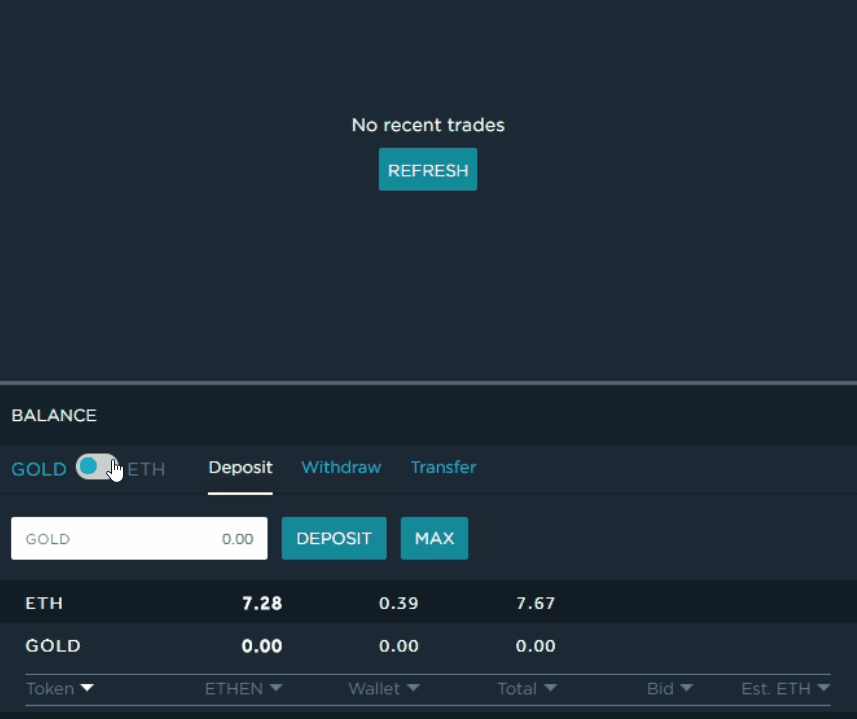
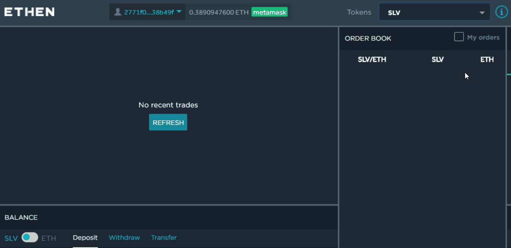

¿Cómo ponerse en contacto con el servicio de soporte?
Si tiene algún problema mientras usa el sitio, envíe una descripción del problema al chat de Telegram
https://t.me/ethen_market.
Para otro tipo de consultas, puede ponerse en contacto con nosotros escribiéndonos a info@ethen.market.
Para otro tipo de consultas, puede ponerse en contacto con nosotros escribiéndonos a info@ethen.market.
¿Cómo empezar a operar y depositar fondos en Ethen?
Consulte la guía para principiantes para familiarizarse con las funciones básicas de Ethen.
Deposite fondos en el contrato inteligente de Ethen desde su cartera personal. La cartera se detectará automáticamente si está conectada cuando accede al sitio.
También puede pegar su clave privada directamente en el campo de dirección de la cartera.
Deposite fondos en el contrato inteligente de Ethen desde su cartera personal. La cartera se detectará automáticamente si está conectada cuando accede al sitio.
También puede pegar su clave privada directamente en el campo de dirección de la cartera.
¿Cómo hacer una retirada?

¿Cómo encontrar órdenes al mejor precio?
Al pulsar el botón Comprar/Vender y enviar la orden al servidor, este buscará automáticamente la mejor coincidencia (que podría no ser necesariamente la misma orden que eligió en la cartera de órdenes) y le ofrecerá lo siguiente:
- Órdenes actualmente disponibles con un precio menor o igual que el de su orden de compra (empezando por la más baja).
- Órdenes actualmente disponibles con un precio mayor o igual que el de su orden de venta (empezando por la más alta).
¿Cómo comprar y vender en Ethen?
Asegúrese de que su cartera está conectada y seleccione el token con el que desea operar.
Especifique la cantidad, el precio máximo/mínimo y la fecha de caducidad de su orden, o haga clic en una orden de la cartera de órdenes para pegar los valores.
Si no hay activos suficientes al precio indicado o si no hay ningún comprador para la cantidad total que desea vender, la orden se ejecutará parcialmente a los mejores precios disponibles. Parte de la orden permanecerá en la cartera de órdenes hasta que se ejecute o caduque.
¿Cómo cancelar una orden abierta?


¿Cómo definir el precio del gas?
El precio recomendado del gas lo establece Ethen. Puede cambiarlo aquí:
¿Qué carteras son compatibles con la plataforma de Ethen?
Recomendamos usar el complemento MetaMask o la cartera de hardware Ledger Nano S para disfrutar de una experiencia cómoda y segura. Lea las instrucciones para
instalar la extensión MetaMask
o
conectar su dispositivo Ledger.
También puede operar en Ethen con cualquier cartera de Ethereum usando su clave privada. Aunque Ethen no almacena sus claves privadas, no se recomienda usar este método. Al copiar la clave privada en un portapapeles, sus fondos podrían ser robados en caso de un ataque al sitio, si visita un sitio web de phishing por accidente o si su equipo tiene malware capaz de robar los datos del portapapeles.
También puede operar en Ethen con cualquier cartera de Ethereum usando su clave privada. Aunque Ethen no almacena sus claves privadas, no se recomienda usar este método. Al copiar la clave privada en un portapapeles, sus fondos podrían ser robados en caso de un ataque al sitio, si visita un sitio web de phishing por accidente o si su equipo tiene malware capaz de robar los datos del portapapeles.
¿Cómo conectar MetaMask?
- Instale MetaMask y asegúrese de que la extensión está habilitada en el navegador.
- Haga clic en el icono de la extensión en el navegador para importar el almacenamiento existente en MetaMask o cree uno nuevo.
- Vuelva a cargar la página https://ethen.market . La cartera se detectará automáticamente en la barra superior. Si previamente utilizaba una cartera diferente, seleccione MetaMask en el menú desplegable.
¿Cómo conectar una cartera Ledger Nano?
- Instale la aplicación Ledger Wallet Ethereum en su dispositivo Ledger
- En los ajustes de la aplicación Ledger Wallet Ethereum seleccione Yes (Sí) en Contract data (Datos del contrato) y Browser support (Compatibilidad con navegadores).
- Conecte el dispositivo Ledger a su ordenador.
- Abra la aplicación Ledger Wallet Ethereum en su dispositivo.
- Seleccione la cartera Ledger Nano S en https://ethen.market
¿Dónde se encuentra el código fuente del contrato de Ethen?
¿Qué puedo hacer si el sitio no está disponible y no puedo retirar fondos?
El código para retirar fondos es de fuente abierta y está disponible en
https://ethenmarket.github.io/
¿Cuánto tardan en procesarse los depósitos y retiradas?
Depende de la carga de la red de Ethereum en el momento de la transacción. Normalmente suele tardar entre 14 segundos y 2 minutos.
¿Hay algún límite de retirada?
No hay límites de retirada en Ethen.
¿Cuánto tarda en realizarse una operación?
El tiempo máximo es de 5 minutos. Transcurridos 5 minutos, la operación se cancelará automáticamente.
¿Es posible modificar una orden?
No se pueden cambiar los detalles de una orden una vez emitida. Vaya a Operaciones > Órdenes para cancelar una orden abierta y crear una nueva.
¿Es Ethen seguro?
Tomamos una serie de medidas para optimizar la seguridad de sus fondos en Ethen:
- No se crean cuentas de usuario en el intercambio, lo que significa que no es posible acceder a una cartera mediante la clave privada y no hay espacio donde guardar información personal.
- Los fondos que se envían al contrato inteligente de Ethen se verifican mediante dos firmas digitales para garantizar que la información de la transacción es correcta e imposible de modificar.
- El código para retirar fondos es de fuente abierta y está disponible en Github por si el sitio principal no estuviera disponible.
¿Cuáles son las tarifas y los límites de operaciones?
Solo se cobran tarifas cuando se ejecutan órdenes de venta/compra.
Tarifa del emisor: 0 %.
Tarifa del receptor: 0,25 %.
Tarifa del emisor: 0 %.
Tarifa del receptor: 0,25 %.
¿Existe un importe mínimo o máximo por orden?
El importe mínimo de una orden es de 0,001 ETH. No hay importe máximo en Ethen.
¿Cuándo se paga gas?
El gas es una tarifa de ejecución por cada operación realizada en la cadena de bloques de Ethereum. Esta tarifa se dirige a la persona que mina el bloque.
Se paga gas cada vez que se envía una transacción a la cadena de bloques de Ethereum, así como cuando se ejecuta una operación y se envían tokens o ETH de su cartera o a esta.
No se paga gas por crear una orden de compra o venta, que no se puede combinar inmediatamente y se envía a la cartera de órdenes.
Tenga en cuenta que el gas necesario para cada transacción se carga siempre a su cartera personal. Asegúrese de que tiene fondos suficientes para satisfacer el gas al realizar un depósito para Ethen.
Se paga gas cada vez que se envía una transacción a la cadena de bloques de Ethereum, así como cuando se ejecuta una operación y se envían tokens o ETH de su cartera o a esta.
No se paga gas por crear una orden de compra o venta, que no se puede combinar inmediatamente y se envía a la cartera de órdenes.
Tenga en cuenta que el gas necesario para cada transacción se carga siempre a su cartera personal. Asegúrese de que tiene fondos suficientes para satisfacer el gas al realizar un depósito para Ethen.